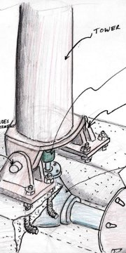
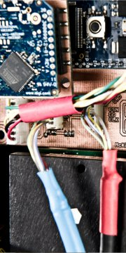
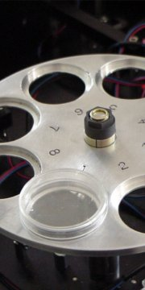
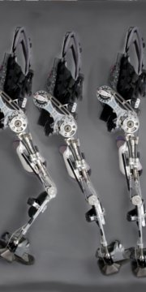
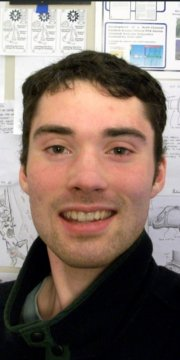

I am especially good at quickly analyzing problems, developing robust engineering solutions, and producing rugged prototypes. I have applied my unique set of skills to a broad range of problems spanning assistive robotics, clinical diagnostic systems, and numerous and varied custom mechanism designs. I enjoy working on new problems and collaborating with passionate people in different fields. I am always looking for interesting and challenging problems that push the limits of possibility.
Currently I am a 4th year PhD cantidate at UC Berkeley. While at Berkeley, I have focused my efforts on developing high performance, super lightweight, assistive robotics for paraplegics. My designs push the limits of what is possible with current materials and techniques, and challenge the conventional approach to robotic systems. The primary objective of this research is to provide independence to the physically disabled by addressing limitations of current assisted paraplegic walking devices. We have demonstrated system feasibility with a number of paraplegic test pilots and we are excited about making our technology available to the masses.
    